공조냉동기계산업기사 (2011-08-21 기출문제)
1과목: 공기조화
1. 다음 그림과 공기선도상의 상태에서 CF(Contact Factor)를 나타내고 있는 것은?
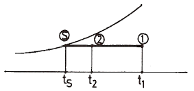
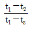
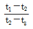
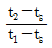
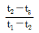
(정답률: 63%)

2. 건구온도 32℃, 절대습도 0.02kg/kg의 공기 5000CMH와 건구온도 25℃, 절대습도 0.002kg/kg 의 공기 10000CMH가 혼합 되었을 때 건구온도는 약 몇 ℃인가?
- 25.6℃
- 27.3℃
- 28.3℃
- 29.6℃
(정답률: 60%)
3. 냉방부하 종류 중 실내부하에 해당되지 않는 것은?
- 배관에서의 손실열
- 유리를 통과하는 전도열
- 지붕을 통과하는 복사열
- 인체에서의 발생열
(정답률: 75%)
4. 결로를 방지하기 위한 방법으로 옳지 않은 것은?
- 벽면을 가열시킨다.
- 벽면을 단열시킨다.
- 바닥온도를 낮게 해 준다.
- 강제로 온풍을 해 준다.
(정답률: 82%)
5. 공기조화방식 중 복사냉난방식의 설명으로 옳지 않은 것은?
- 다른 방식에 비하여 실내쾌감감도가 높다.
- 잠열부하가 많은 곳에 적당하다.
- 중간기에 냉동기의 운전이 필요하다.
- 덕트 스페이스 및 열운반 동력을 줄일 수 있다.
(정답률: 64%)
6. 증기난방 방식의 분류로 적당하지 않은 것은?
- 고압식, 저압식
- 단관식, 복관식
- 건식환수식, 습식환수식
- 개방식, 밀폐식
(정답률: 72%)
7. 축열조 내에 코일을 설치하고 그 주위에 물이 채워져 있어서 제빙 시 코일 내부에 저온의 브라인을 순환시켜 코일 주위에 물이 얼게 되며, 해빙 시에는 코일외부로 물이 흐르게 되어 얼음을 녹게 하는 원리를 이용하는 빙축열 시스템의 제빙 방식은?
- 관외 착빙형
- 캡슐형
- 빙박리형
- 관내 착빙형
(정답률: 73%)
8. 40W짜리 형광등 10개를 조명용으로 사용하는 사무실이 있다. 이 때 조명기구로부터의 취득 열량은 약 얼마인가? (단, 안정기의 부하는 20%로 한다.)
- 68kcal/h
- 210kcal/h
- 413kcal/h
- 625kcal/h
(정답률: 65%)
9. 5000W의 열을 발산하는 기계실의 온도를 26℃로 유지하기 위한 환기량은 약 얼마인가? (단, 외기온도 12℃, 공기 정압비율 1.01kJ/kg℃, 밀도 1.2kg/m3이다.)
- 294.67m3/h
- 353.6m3/h
- 1060.82m3/h
- 1272.98m3/h
(정답률: 49%)
10. 증기 또는 전기 가열기로 가열한 온수 수면에서 발생하는 증기로 가습하는 방법으로 소형 공조기에 사용되는 것은?
- 초음파형
- 원심형
- 노즐형
- 가습팬형
(정답률: 84%)
11. 흡착식 제습기의 특징으로 맞지 않는 것은?
- -50℃ 정도의 공기도 얻을 수가 있으며 취급도 간단하다.
- 저온저습의 실험실이나 건조실 등 소풍량을 사용하는데 적용된다.
- 일정시간 사용 후 재생 시 소량의 열(1kg의 수분을 제어하는데 약 100kcal정도)로서도 가능하다.
- 장치내에 먼지가 차면 흡습능력을 심하게 해친다.
(정답률: 62%)
12. 스파이럴형 열교환기의 구조에 대한 설명으로 맞는 것은?
- 스테인리스 강판을 스파이럴상으로 감아서 용접으로서 수밀하고 가스켓을 사용한다.
- 수-수 형식에 사용되며 증기-수 형식에는 사용하지 않는다
- 형상, 중량이 플레이트식 보다 크다.
- 내압 10atg, 내온 200℃ 까지 가능하다.
(정답률: 67%)
13. 공기조화방식 분류 중 전공기방식이 아닌 것은?
- 멀티존 유닛방식
- 변풍량 재열식
- 유인유잇방식
- 정풍량식
(정답률: 75%)
14. 실내 온습도 조건이 26℃, 50%인 어떤 방의 냉방 부하를 계산한 결과 현열부하 qS=3000kcal/h, 잠열 부하 qL-1000kcal/h였다면 이 때 현열비는 얼마인가?
- 0.65
- 0.70
- 0.75
- 0.80
(정답률: 76%)
15. 현재의 공기상태가 건구온도 26℃, 상대습도 50%라면, 공기의 건구온도와 습구온도, 노점온도의 값이 큰 것부터 나열한 것은?
- 건구온도 > 습구온도 > 노점온도
- 습구온도 > 건구온도 > 노점온도
- 노점온도 > 습구온도 > 건구온도
- 건구온도 > 노점온도 > 습구온도
(정답률: 73%)
16. 공기조화 방식에서 변풍량 방식에 사용되는 유닛(VAV Unit) 중 풍량제어 방식에 따라 구분할 때 공조기에서 오는 1차 공기의 분출에 의해 실내공기인 2차 공기를 취출하는 방식은?
- 바이패스형
- 유인형
- 슬롯형
- 교축형
(정답률: 83%)
17. 덕트의 재료로서 현재 일반적으로 가장 많이 사용 되는 것은?
- 알루미늄 판
- 일반탄소 강판
- 동판
- 아연도금 강판
(정답률: 75%)
18. 1기압, 100℃의 포화 수 5kg을 100℃의 건초화증기로 만들기 위해서는 약 몇 kcal의 열량이 필요한가?
- 2695
- 3500
- 4850
- 5860
(정답률: 56%)
19. 덕트설계 시에는 송풍기에서 필요한 정압을 계산하여야 한다. 송풍기의 정압이란 무엇인가?
- 송풍기의 전압에서 송풍기 토출측 동압을 뺀 값
- 송풍기의 흡입측 전압과 송풍기 토출측 동압을 더 한 값
- 송풍기의 토출측 전압에서 송풍기 흡입측 동압을 뺀 값
- 송풍기의 전압과 송품기 흡입측 동압을 더한 값
(정답률: 68%)
20. 난방부하 계산 시 온도 측정방법에 대한 설명 중 틀린 것은?
- 실내온도 : 바닥 위 2m의 높이에서 외벽으로부터 1m 이상 덜어진 장소의 온도
- 외기온도 : 기상대의 통계에 의한 그 지방의 매일 최저온도의 평균값보다 다소 높은 온도
- 지중온도 : 지하실의 난방부하의 계산에서 지표면 10m 아래까지의 온도
- 천장 높이에 따른 온도 : 천장의 높이가 3m 이상이 되면 직접난방법에 의해서 난방 할 때의 방의 윗부분과 밑면과의 평균온도
(정답률: 72%)
2과목: 냉동공학
21. 소형 냉동기의 브라인 순환령이 10kg/min이고 출입구 온도차는 10℃이다. 압축기의 실제소요 마력이 3PS일 때 이 냉동기의 실제 성적계수는 약 얼마인가? (단, 브라인의 비열은 0.8kcal/kg℃이다.)
- 1.53
- 2.53
- 3.53
- 4.53
(정답률: 50%)
22. 팽창기구 중 모세관의 특징에 대한 설명으로 맞는 것은?
- 모세관 저항이 설계치보다 작게되면 증발기의 열교환 효율이 증가한다.
- 냉동부하에 따른 냉매의 유량조절이 쉽다.
- 압축기를 가동할 때 기동동력이 적게 소요된다.
- 냉동부하가 큰 경우 증발기 출구 과열도가 낮게 된다.
(정답률: 56%)
23. 그림과 같은 이론냉동사이클에서 열펌프의 성적계수를 나타낸 것으로 올바른 것은?
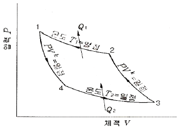
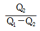
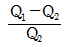
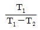
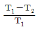
(정답률: 69%)
24. NH3, R-114, R-22의 냉매특성을 비교할 때 증발잠열이 큰 것부터 나열한 순서가 옳은 것은?
- NH3>R-114>R-22
- NH3>R-22>R-114
- R-114>NH3>R-22
- R-22>NH3>R-114
(정답률: 67%)
25. 어떤 냉동장치에 있어서 냉동부하는 15000kcal/h, 냉매증기 압축에 필요한 동력은 4kW, 응축기 입구에서 있어서 냉각수 온도 32℃, 냉각수량 62L/min일 때 응축기 출구에 있어서 냉각수 온도는 약 몇 도가 되는가?
- 35℃
- 36℃
- 37℃
- 38.5℃
(정답률: 47%)
26. 압축냉동 사이클에서 엔트로피가 감소하고 있는 과정은 어느 과정인가?
- 증발과정
- 압축과정
- 응축과정
- 팽창과정
(정답률: 77%)
27. 이상 기체를 정압하에서 가열하면 체적과 온도의 변화는 각각 어떻게 되는가?
- 체적증가, 온도일정
- 체적증가, 온도상승
- 체적일정, 온도상승
- 체적일정, 온도일정
(정답률: 80%)
28. 다음과 같은 대향류열교환기의 대수 평균 온도차는 약 얼마인가? (단, t1 : 27℃, t2 : 13℃, tw1 : 5℃, tw2 : 10℃이다.)
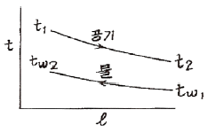
- 9.0℃
- 11.9℃
- 13.7℃
- 15.5℃
(정답률: 62%)
29. 응축온도가 일정하고 증발온도가 높아짐에 따라 커지는 것은?
- 압축일의 열당량
- 응축기의 방출열량
- 냉동효과
- RT당 냉매순환량
(정답률: 73%)
30. 저온장치 중 얇은 금속판에 브라인이나 냉매를 통하게 하여 금속판의 외면에 식품을 부탁시켜 동결하는 장치는 무엇인가?
- 반 송풍 동결장치
- 접촉식 동결장치
- 송풍 동결장치
- 터널식 공기 동결장치
(정답률: 88%)
31. 압축기 및 응축기에서 심한 온도상승을 방지하기 위한 대책으로서 맞지 않는 것은?
- 규정된 냉매량 보다 적은 냉매를 충진 한다.
- 온도 조절기를 사용한다.
- 충분한 냉각수를 보낸다.
- 압력 차단 스위치를 설치한다.
(정답률: 84%)
32. 냉동장치의 고압측 게이지압력이 12.5kgf/cm2을 가르키고 있다. 이 때 절대압력은 얼마인가? (단, 대기압은 1.033kgf/cm2이다.)
- 10.03kgf/cm2
- 11.47kgf/cm2
- 12.53kgf/cm2
- 13.53kgf/cm2
(정답률: 56%)
33. 냉동장치에서 펌프다운의 목적이 아닌 것은?
- 냉동장치의 저압 측을 수리할 때
- 기동 시 액햄머 방지 및 경부하 기동을 위하여
- 프레온 냉동장치에서 오일포밍(oil foaming)을 방지하기 위하여
- 저장고내 급격한 온도저하를 위하여
(정답률: 76%)
34. 제빙 장치에서 브라인의 온도가 -10℃이고, 얼음의 두께가 20cm인 관빙의 결빙 소요시간은 얼마인가? (단, 결빙계수는 0.56이다.)
- 25.4 시간
- 22.4 시간
- 20.4 시간
- 18.4 시간
(정답률: 67%)
35. 증기분사식 냉동장치에서 사용되는 냉매는?
- 프레온
- 물
- 암모니아
- 염화칼슘
(정답률: 86%)
36. -15℃에서 건조도 0인 암모니아 가스를 교축 팽창 시켰을 때 변화가 없는 것은?
- 비체적
- 압력
- 엔탈피
- 온도
(정답률: 83%)
37. 폴리트로픽(polytropic) 변화의 일반식 PVn=C(상수)에 대한 설명으로 옳은 것은?
- n=K일 때 등온변화
- n=1일 때 정적변화
- n=δ일 때 단열변화
- n=0일 때 정압변화
(정답률: 60%)
38. 냉동운송설비 중 냉동자동차를 냉각장치 및 냉각 방법에 따라 분류할 때 그 종류에 해당되지 않는 것은?
- 기계식 냉동차
- 액체질소식 냉동차
- 헬륨냉동식 냉동차
- 축냉식 냉동차
(정답률: 77%)
39. 표준 냉동사이클(기준 냉동사이클)에서 응축온도와 팽창밸브 직전의 과냉각온도는 일반적으로 몇 도로 하는가?
- 3℃
- 5℃
- 10℃
- 15℃
(정답률: 75%)
40. 동결속도에 따라 동결방법을 구분하면 급속동결과 완만동결로 구분할 수 있는 기준은 무엇인가?
- 동결두께
- 동결온도
- 최대 빙결정 생성대 통과시간
- 동결장치의 구조
(정답률: 72%)
3과목: 배관일반
41. 배관용 탄소강 강관의 기호는?
- SPP
- SPA
- SPPH
- STBH
(정답률: 73%)
42. 도시가스 사업법에서 정한 가스의 중압공급 시 공급압력은 얼마인가?
- 0.1MPa 이상 1MPa 미만
- 0.5MPa 이상 1.5MPa 미만
- 1MPa 이상 10MPa 미만
- 10MPa 이상 20MPa 미만
(정답률: 82%)
43. 음용수 배관과 음용수 이외의 배관과의 접속 또는 음용수와 일단 배출된 물이 혼합하게 되어 음용수가 오염되는 배관접속은?
- 하트포드 이음(hartford connection)
- 리버스리터 이음(reverse return connection)
- 크로스 이음(corss connection)
- 역류방지 이음(vacuum breaker connection)
(정답률: 81%)
44. 배관진동의 원인으로 거리가 먼 것은?
- 펌프 및 압축기 등의 작동 불균형
- 유체의 열팽창
- 펌프의 서징
- 수격작용
(정답률: 65%)
45. 배수 트랩의 봉수깊이로 적당한 것은?
- 30~50mm
- 50~100mm
- 100~150mm
- 150~200mm
(정답률: 72%)
46. 제조소 및 공급소 밖의 도시가스 배관 설비 기준으로 맞는 것은?
- 철도부지에 매설하는 경우에는 배관의 외면으로부터 궤도 중심까지 3m 이상 거리를 유지해야 한다.
- 철도부지에 매설하는 경우 지표면으로부터 배관의 외면까지의 깊이를 1.2m 이상해야 한다.
- 하천을 횡단하는 배관의 매설은 하천의 경우 2m 이상 깊게 매설해야 한다.
- 수로 밑을 횡단하는 배관의 매설은 1.5m 이상, 기타 좁은 수로인 경우 0.8m 이상 깊게 매설해야 한다.
(정답률: 74%)
47. 온수난방에서 상당 방열면적이 200m2 이고, 한 시간의 최대 급탕량이 700L/h 일 때 보일러 크기(출력)는 몇 kcal/h 인가? (단, 배관손실 부하는 총부하의 20%로 하며, 급탕 공급 온도차는 60℃로 한다.)
- 132000
- 158400
- 180000
- 90000
(정답률: 60%)
48. 납관의 이음용 공구가 아닌 것은?
- 사이징 툴
- 드레서
- 맬릿
- 턴핀
(정답률: 77%)
49. 공기조화 설비 중 냉수코일 설계기준으로 틀린 것은?
- 공기와 물의 흐름은 대향류로 한다.
- 가능한 한 대수평균온도차를 작게 한다.
- 코일을 통과하는 냉수의 유속은 1m/s 로 한다.
- 코일은 통과하는 공기의 유속은 2~3m/s 정도로 한다.
(정답률: 73%)
50. 액화 천연가스의 지상 저장탱크에 대한 설명 중 잘못된 것은?
- 지상식 저장탱크는 금속 2중벽 탱크이다.
- 내부탱크는 -162℃의 초저온에 견딜 수 있어야 한다.
- 외부탱크는 연강으로 만들어 진다.
- 증발 가스량이 지하 저장 탱크보다 많고 저렴하며 안전하다.
(정답률: 76%)
51. 압력 배관용 탄소강관(SPPS)의 최대 사용 압력은 얼마인가?
- 45 kgf/cm2
- 10 kgf/cm2
- 65 kgf/cm2
- 100 kgf/cm2
(정답률: 64%)
52. 다음 중 동관의 장점이 아닌 것은?
- 내식성이 좋다.
- 강관보다 가볍고 취급이 쉽다.
- 동결파손에 강하다.
- 내충격성이 좋다.
(정답률: 73%)
53. 건축설비의 급수배관에서 기울기에 대한 설명으로 틀린 것은?
- 급수관의 모든 기울기는 1/250을 표준으로 한다.
- 배관기울기는 관의 수리 및 기타 필요시 관내의 물을 완전히 퇴수시킬 수 있도록 주어야 한다.
- 배관 기울기는 관내 흐르는 유체의 유속과 관련이 없다.
- 급수관의 수평주관에서 옥상 탱크식은 하향 기울기로 한다.
(정답률: 82%)
54. 통기 입관을 하나로 묶어 대기로 개방시키기 위해 설치하는 관을 무엇이라 하는가?
- 습통기관
- 통기수직관
- 통기헤더
- 공용통기관
(정답률: 68%)
55. 펌프의 설치 및 배관상의 주의를 설명한 것 중 잘못된 것은?
- 펌프는 기초 볼트를 사용하여 기초 콘크리트 위에 설치 고정한다.
- 펌프와 모터의 축 중심을 일직선상에 정확하게 일치시키고 볼트로 죈다.
- 펌프의 설치 위치를 되도록 높여 흡입양정을 크게 한다.
- 흡입구는 수면 위에서부터 관경의 2배 이상 물속으로 들어가게 한다.
(정답률: 81%)
56. 고압증기 난방에서 환수관이 트랩 장치보다 높은 곳에 배관되었을 때 버킷 트랩이 응축수를 리프팅 하는 높이는 증기파이프와 환수관의 압력차 1kgf/cm2에 대하여 얼마로 하는가?
- 2m이하
- 5m이하
- 3m이하
- 7m이하
(정답률: 65%)
57. 급수관의 내면부식과 직접적인 관계가 없는 것은?
- 물의 경도
- 물의 온도
- 물의 산도
- 물의 수질(불순물)
(정답률: 66%)
58. 공기조화 방식의 분류 중 유인유닛방식 공조장치에 대한 설명으로 틀린 것은?
- 잠열 부하에 따른 조절이 불가능하다.
- 온도, 습도 조절이 엄격한 곳에 적합하다.
- 감열 부하에 대해 2차유인 공기를 가열, 냉각해서 대응한다.
- 덕트 내의 소음을 줄이기 위해 플리넘 챔버(plenum chamber)를 사용한다.
(정답률: 58%)
59. 급탕배관에서 관의 팽창과 수축을 흡수한 목적으로 설치하는 것은?
- 도피관을 설치한다.
- 팽창관을 설치한다.
- 스팀사일렌서를 설치한다.
- 신축이음쇠를 설치한다.
(정답률: 56%)
60. 냉매 배관 시공법에 관한 설명으로 틀린 것은?
- 압축기와 응축기가 동일 높이 또는 응축기가 아래에 있는 경우 배출관은 하향 기울기로 한다.
- 증발기가 응축기보다 아래에 있을 때 냉매액이 증발기에 흘러내리는 것을 방지하기 위해 2m 이상 역루프를 만들어 배관한다.
- 외부 균압관은 감온통이 있는 위치에서 약간 상류에 설치한다.
- 액관 배관 시 증발기 입구에 전자밸브가 있을 때는 루프이음을 할 필요가 없다.
(정답률: 48%)
4과목: 전기제어공학
61. 서보기구에 사용되는 서보 전동기는 피드백제어계의 구성요소 중 주로 어느 쪽의 기능을 담당하는가?
- 비교부
- 조작부
- 검출부
- 제어대상
(정답률: 67%)
62. 전원과 부하가 다 같이 △결선된 3상 평형회로에서 전원전압이 600[V], 환상 부하 임피던스가 6+j8[Ω]인 경우 선전류는 몇 [A] 인가?
- 60√3
- 60/√3
- 20
- 60
(정답률: 55%)
63. 옴의 법칙을 바르게 설명한 것은?
- 전압은 전류에 비례한다.
- 전류는 저항에 비례한다.
- 전압은 저항의 제곱에 비례한다.
- 전압은 전류의 제곱에 비례한다.
(정답률: 77%)
64. 직류회로에 사용되고 자계와 전류사이에 작용하는 전자력을 이용한 계측기는?
- 정전형
- 유도형
- 가동철편형
- 가동코일형
(정답률: 59%)
65. 다음 중 피드백 제어계의 장점이 아닌 것은?
- 생산 속도를 상승시키고 생산량을 크게 증대 시킬 수 있다.
- 생산품질향상이 현저하여 균일한 제품을 얻을 수 있다.
- 제어장치의 운전, 수리 및 보관에 고도의 지식과 능숙한 기술이 있어야 한다.
- 생산 설비의 수명을 연장할 수 있고, 설비의 자동화로 생산원가를 절감할 수 있다.
(정답률: 70%)
66. 전류에 의한 자계의 방향을 결정하는 법칙은?
- 렌츠의 법칙
- 플레밍의 오른손 법칙
- 플레밍의 왼손 법칙
- 암페어의 오른나사 법칙
(정답률: 54%)
67. PI 제어동작은 프로세스 제어계의 정상측성 개선에 흔히 사용된다. 이것에 대응하는 보상요소는?
- 동상 보상요소
- 지상 보상요소
- 진상 보상요소
- 지상 및 진상 보상요소
(정답률: 83%)
68. 다음 블록선도의 입력과 출력이 성립하기 위한 A의 값은?
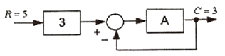
- 1/4
- 1/3
- 3
- 4
(정답률: 56%)
69. 임피던스 강하가 4% 인 어느 변압기가 운전 중 단락되었다면 그 단락전류는 정격전류의 몇 배가 되는가?
- 10
- 20
- 25
- 30
(정답률: 70%)
70. 자기 형평성이 없는 보일러 드럼의 액위제어에 적합한 제어동작은?
- P동작
- I동작
- PI동작
- PD동작
(정답률: 64%)
71. 60[Hz], 6극인 교류 발전기의 회전수는 몇 [rpm]인가?
- 1200
- 1500
- 1800
- 3600
(정답률: 66%)
72. 다음 블록선도의 특성방정식으로 옳은 것은?(오류 신고가 접수된 문제입니다. 반드시 정답과 해설을 확인하시기 바랍니다.)
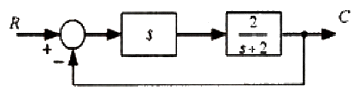
- 3s+2
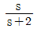
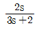
- 2s
(정답률: 65%)
73. 다음 중 전기 기계에서 철심을 성층하여 사용하는 이유로 알맞은 것은?
- 와류손을 줄이기 위하여
- 맴돌이 전류를 증가시키기 위하여
- 동손을 줄이기 위하여
- 기계적 강도를 크게 하지 위하여
(정답률: 70%)
74. 잔류편차가 존재하는 제어계는?
- 적분제어계
- 비례제어계
- 비례적분 제어계
- 비례적분 미분 제어계
(정답률: 73%)
75. R-L-C 직렬회로에서 소비전력이 최대가 되는 조건은?
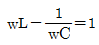
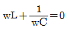
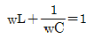
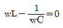
(정답률: 71%)
76. PLC(Programmable Logic Controller)를 설치할 때 옳지 않은 방법은?
- 설치장소의 환경을 충분히 파악하여 온도, 습도, 진동, 충격 등에 주의하여야 한다.
- 배선공사시 동력선과 신호케이블은 평행시키지 않도록 한다.
- 접지공사는 제1종 접지공사로 하고 다른 기기와 공용접지가 바람직하다.
- 잡음(Noise)대책의 일환으로 제어반의 배선은 실드케이블을 사용한다.
(정답률: 78%)
77. 저항값이 일정한 저항부하에 인가전압을 3배로 하면 소비전력은 몇 배가 되는가?
- 2
- 3
- 6
- 9
(정답률: 68%)
78. 다음 신호흐름선도와 등가인 블록선도는?
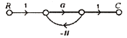
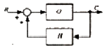
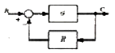
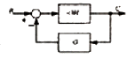
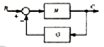
(정답률: 50%)
79. 그림과 같은 유접점 회로의 논리식은?
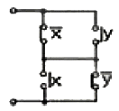
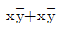
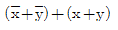
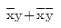
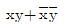
(정답률: 71%)
80. 그림과 같은 회로에서 해당되는 램프의 식으로 옳은 것은?
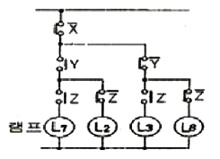
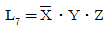
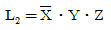
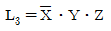
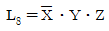
(정답률: 84%)
공기선도상에서 CF(Contact Factor)는 두 가지 요소, 즉 접촉면적과 접촉압력에 의해 결정됩니다. 그림에서 ""은 접촉면적이 가장 크기 때문에 CF가 가장 높다고 볼 수 있습니다.
반면에 ""와 ""은 접촉면적이 작기 때문에 CF가 낮습니다. ""는 접촉면적은 크지만 접촉압력이 낮기 때문에 ""보다 CF가 낮습니다.